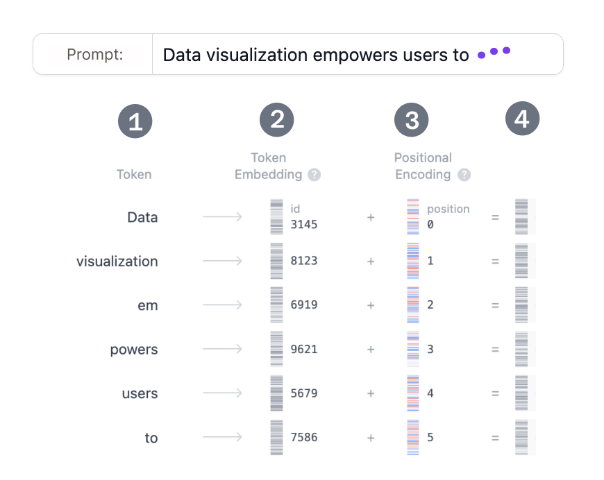
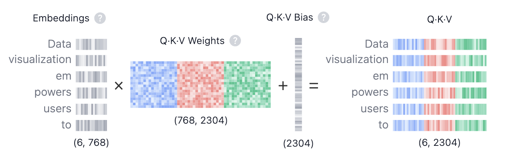

什么是 Transformer?
Transformer 是一种从根本上改变了人工智能研究方向的神经网络架构。它于 2017 年在开创性论文 "Attention is All You Need" 中首次提出，此后成为深度学习模型的首选架构，驱动了 OpenAI 的 GPT、Meta 的 Llama 以及 Google 的 Gemini 等文本生成模型。除文本之外，Transformer 还被应用于 音频生成、 图像识别、 蛋白质结构预测，甚至 游戏博弈等领域，展现了其在众多领域中的通用性。
从根本上说，文本生成类 Transformer 模型的工作原理是下一个词元预测 (Next-Token Prediction)：给定用户的文本提示，模型预测紧随其后的最可能的下一个词元（一个词或词的一部分）是什么。Transformer 的核心创新和强大之处在于其自注意力 (Self-Attention) 机制，使其能够处理整个序列并比以往的架构更有效地捕捉长距离依赖关系。
GPT-2 系列模型是文本生成 Transformer 的典型代表。本可视化工具基于 GPT-2 (small) 模型运行，该模型拥有 1.24 亿个参数。虽然它并非最新或最强大的 Transformer 模型，但它与当前最先进的模型共享许多相同的架构组件和原理，因此是理解基础知识的理想起点。
Transformer 架构
每个文本生成 Transformer 都由以下三个关键组件构成：
- 嵌入 (Embedding)：文本输入被分割成称为词元 (Token) 的更小单元，词元可以是完整的词或子词。这些词元随后被转换为称为嵌入 (Embedding) 的数值向量，用于捕捉词语的语义信息。
- Transformer Block 是模型处理和变换输入数据的基本构建单元。每个 Block 包含：
- 注意力机制 (Attention Mechanism)，Transformer Block 的核心组件。它使词元之间能够相互通信，从而捕捉上下文信息和词语之间的关系。
- MLP（多层感知机）层，一种对每个词元独立运算的前馈网络 (Feed-Forward Network)。注意力层的目标是在词元之间传递信息，而 MLP 的目标是精炼每个词元的表示。
- 输出概率：最终的线性层和 Softmax 层将处理后的嵌入转换为概率分布，使模型能够预测序列中的下一个词元。
嵌入 (Embedding)
假设你想使用 Transformer 模型生成文本，输入了如下提示语：”Data visualization empowers users to”。这段输入需要被转换为模型能够理解和处理的格式，这正是嵌入 (Embedding) 的作用：它将文本转换为模型可以处理的数值表示。要将提示语转换为嵌入，我们需要：1）对输入进行分词 (Tokenization)；2）获取词元嵌入 (Token Embedding)；3）添加位置信息；最后 4）将词元嵌入和位置编码相加，得到最终的嵌入表示。下面我们逐步了解每一步是如何完成的。

第 1 步：分词 (Tokenization)
分词是将输入文本拆分为更小、更易处理的单元——词元 (Token) 的过程。词元可以是一个完整的词，也可以是子词。例如，"Data" 和 "visualization" 各对应一个独立的词元，而 "empowers" 则被拆分为两个词元。完整的词元词表在训练模型之前就已确定：GPT-2 的词表包含 50,257 个唯一词元。将输入文本拆分为具有不同 ID 的词元后，我们就可以从嵌入中获取它们的向量表示。
第 2 步：词元嵌入 (Token Embedding)
GPT-2 (small) 将词表中的每个词元表示为一个 768 维的向量；向量的维度取决于具体模型。这些嵌入向量存储在一个形状为 (50,257, 768) 的矩阵中，包含约 3900 万个参数！这个庞大的矩阵使模型能够为每个词元赋予语义含义——在语言中用法或含义相似的词元在这个高维空间中距离较近，而不相似的词元则距离较远。
第 3 步：位置编码 (Positional Encoding)
嵌入层还编码了每个词元在输入提示语中的位置信息。不同的模型使用不同的位置编码方法。GPT-2 从零开始训练自己的位置编码矩阵，将其直接集成到训练过程中。
第 4 步：最终嵌入 (Final Embedding)
最后，我们将词元嵌入和位置编码相加，得到最终的嵌入表示。这个组合表示同时捕捉了词元的语义含义及其在输入序列中的位置信息。
Transformer Block
Transformer 处理的核心在于 Transformer Block，它由多头自注意力 (Multi-Head Self-Attention) 和多层感知机 (MLP) 层组成。大多数模型由多个这样的 Block 依次堆叠而成。词元表示从第一个 Block 到最后一个 Block 逐层演化，使模型能够对每个词元建立起精细的理解。这种分层方法产生了对输入的更高阶表示。我们正在研究的 GPT-2 (small) 模型由 12 个这样的 Block 组成。
多头自注意力 (Multi-Head Self-Attention)
自注意力机制使模型能够捕捉序列中词元之间的关系，使每个词元的表示都受到其他词元的影响。多个注意力头允许模型从不同角度审视这些关系；例如，一个头可能捕捉短距离的句法关联，而另一个头则追踪更广泛的语义上下文。在接下来的部分中，我们将逐步介绍多头自注意力的计算过程。
第 1 步：查询 (Query)、键 (Key) 和值 (Value) 矩阵

每个词元的嵌入向量被转换为三个向量： 查询 (Q)、 键 (K) 和 值 (V)。这些向量通过将输入嵌入矩阵分别与 Q、 K 和 V 的已学习权重矩阵相乘得到。下面用一个网页搜索的类比来帮助理解这些矩阵背后的直觉：
- 查询 (Query, Q) 就像你在搜索引擎栏中输入的搜索文本，代表你想要"了解更多信息"的那个词元。
- 键 (Key, K) 就像搜索结果页面中每个网页的标题，代表查询可以关注的候选词元。
- 值 (Value, V) 就像网页的实际内容。当我们将合适的搜索词（Query）与相关结果（Key）匹配后，我们想要获取最相关页面的内容（Value）。
通过使用这些 QKV 值，模型可以计算注意力分数 (Attention Score)，以确定在生成预测时每个词元应获得多少关注度。
第 2 步：多头分割 (Multi-Head Splitting)
查询 (Query)、键 (Key) 和
值 (Value)
向量被分割为多个头——在 GPT-2 (small) 中被分为
12 个头。每个头独立处理嵌入的一个片段，捕捉不同的句法和语义关系。这种设计有助于并行学习多样化的语言特征，增强模型的表达能力。
第 3 步：掩码自注意力 (Masked Self-Attention)
在每个头中，我们执行掩码自注意力计算。该机制使模型能够通过关注输入的相关部分来生成序列，同时阻止访问未来的词元。

- 点积 (Dot Product)： 查询 (Query) 和 键 (Key) 矩阵的点积决定了注意力分数，生成一个反映所有输入词元之间关系的方阵。
- 缩放与掩码 (Scaling · Mask)：注意力分数经过缩放后，对注意力矩阵的上三角部分应用掩码，将这些值设为负无穷，以防止模型访问未来的词元。模型需要学习在不”偷看”未来的情况下预测下一个词元。
- Softmax 与 Dropout：经过掩码和缩放后，注意力分数通过 Softmax 运算转换为概率，然后可选地通过 Dropout 进行正则化。矩阵的每一行之和为 1，表示当前词元左侧每个其他词元的相关程度。
第 4 步：输出与拼接 (Output and Concatenation)
模型使用掩码自注意力分数与
值 (Value) 矩阵相乘，得到自注意力机制的
最终输出。GPT-2 有 12 个自注意力头，每个头捕捉词元之间不同的关系。这些头的输出被拼接在一起，然后通过一个线性投影层。
MLP：多层感知机 (Multi-Layer Perceptron)

多个自注意力头捕捉了输入词元之间的多样化关系后，拼接的输出被送入多层感知机 (MLP) 层，以增强模型的表达能力。MLP 模块由两个线性变换组成，中间夹有一个 GELU 激活函数。
第一个线性变换将输入的维度从 768 扩展四倍到
3072。这个扩展步骤允许模型将词元表示投影
到更高维的空间，在该空间中可以捕捉更丰富、更复杂的模式——这些模式在原始维度中可能无法被察觉。
第二个线性变换随后将维度压缩回原始大小 768。这个压缩步骤将表示恢复到可管理的大小，同时保留了扩展步骤中引入的有用的非线性变换。
与跨词元整合信息的自注意力机制不同，MLP 独立处理每个词元，简单地将每个词元表示从一个空间映射到另一个空间，从而丰富模型的整体表达能力。
输出概率
输入经过所有 Transformer Block 处理后，输出被送入最终的线性层以准备进行词元预测。该层将最终表示投影到一个 50,257 维的空间，其中词表中的每个词元都有一个对应的值，称为 logit（未归一化对数概率）。任何词元都可能是下一个词，因此这个过程使我们能够按照成为下一个词的可能性对词元进行排序。然后我们应用 Softmax 函数将 logit 转换为总和为 1 的概率分布，从而可以根据概率采样下一个词元。

最后一步是通过从该分布中采样来生成下一个词元。temperature（温度）超参数在这一过程中起着关键作用。从数学角度看，这是一个非常简单的运算：模型输出的 logit 只需除以 temperature 即可：
temperature = 1：logit 除以 1 对 Softmax 输出没有影响。temperature < 1：较低的温度通过锐化概率分布使模型更确定和更具确定性，导致输出更可预测。temperature > 1：较高的温度创建更平坦的概率分布，使生成的文本具有更多随机性——有些人将此称为模型的”创造力”。
此外，采样过程还可以通过 top-k 和 top-p 参数进一步细化：
top-k 采样：将候选词元限制为概率最高的前 k 个词元，过滤掉可能性较低的选项。top-p 采样：选择累积概率超过阈值 p 的最小词元集合，确保只有最可能的词元参与采样，同时仍允许多样性。
通过调节 temperature、top-k 和 top-p，你可以在确定性输出和多样化输出之间取得平衡，使模型的行为适应你的具体需求。
辅助架构特性
有几个辅助架构特性可以增强 Transformer 模型的性能。虽然它们对模型的整体性能很重要，但对于理解架构的核心概念而言并非最关键。层归一化 (Layer Normalization)、Dropout 和残差连接 (Residual Connection) 是 Transformer 模型中的关键组件，尤其在训练阶段。层归一化稳定训练过程并帮助模型更快收敛；Dropout 通过随机停用神经元来防止过拟合；残差连接允许梯度直接流过网络，有助于防止梯度消失问题。
层归一化 (Layer Normalization)
层归一化有助于稳定训练过程并改善收敛性。它通过在特征维度上对输入进行归一化，确保激活值的均值和方差保持一致。这种归一化有助于缓解内部协变量偏移 (Internal Covariate Shift) 问题，使模型能够更有效地学习，并降低对初始权重的敏感度。层归一化在每个 Transformer Block 中被应用两次：一次在自注意力机制之前，一次在 MLP 层之前。
Dropout
Dropout 是一种正则化技术，通过在训练过程中随机将一部分模型权重置为零来防止神经网络过拟合。这促使模型学习更鲁棒的特征，减少对特定神经元的依赖，帮助网络更好地泛化到新的、未见过的数据。在模型推理阶段，Dropout 会被停用。这本质上意味着我们在使用训练后的子网络的集成，从而获得更好的模型性能。
残差连接 (Residual Connection)
残差连接最早于 2015 年在 ResNet 模型中引入。这一架构创新通过使极深神经网络的训练成为可能，从而革新了深度学习。本质上，残差连接是跳过一层或多层的快捷路径，将某层的输入直接加到其输出上。这有助于缓解梯度消失问题，使由多个 Transformer Block 堆叠而成的深层网络更容易训练。在 GPT-2 中，每个 Transformer Block 内部使用了两次残差连接：一次在 MLP 之前，一次在 MLP 之后，确保梯度更容易流动，并且较早的层在反向传播过程中能获得充分的更新。
交互功能
Transformer Explainer 设计为交互式工具，允许你探索 Transformer 的内部工作原理。以下是一些你可以体验的交互功能：
- 输入你自己的文本序列，查看模型如何处理并预测下一个词。探索注意力权重、中间计算过程，以及最终输出概率是如何计算的。
- 使用温度滑块控制模型预测的随机性。探索如何通过改变温度值使模型输出更具确定性或更具创造性。
- 选择 top-k 和 top-p 采样方法以调整推理过程中的采样行为。尝试不同的值，观察概率分布如何变化以及如何影响模型的预测。
- 与注意力图交互，查看模型如何关注输入序列中的不同词元。将鼠标悬停在词元上以高亮其注意力权重，探索模型如何捕捉上下文和词语之间的关系。
视频教程
Transformer Explainer 是如何实现的？
Transformer Explainer 内置了一个直接在浏览器中运行的实时 GPT-2 (small) 模型。该模型源自 Andrej Karpathy 的 nanoGPT 项目中的 PyTorch GPT 实现，并已转换为 ONNX Runtime 以实现无缝的浏览器内执行。界面使用 JavaScript 构建，采用 Svelte 作为前端框架，使用 D3.js 创建动态可视化。数值会随用户输入实时更新。
谁开发了 Transformer Explainer？
Transformer Explainer 由以下人员创建： Aeree Cho, Grace C. Kim, Alexander Karpekov, Alec Helbling, Jay Wang, Seongmin Lee, Benjamin Hoover 和 Polo Chau ，来自佐治亚理工学院 (Georgia Institute of Technology)。